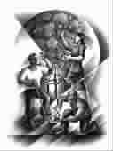

对待一个橘子的好
●罗 西
一个日本人因为心脏病做了外科手术，出院时医生给他看账单，他突然气血攻心，晕厥，死亡。两个美国律师吃饱了没事做，在办公楼里赛跑，其中一个近视眼撞破了玻璃，从摩天大楼里飞出，死亡。阿拉斯加瓦尔笛兹发生石油泄漏后，救援每只海豹的平均花费高达8万美元，在一个特别仪式上，有两只花巨款拯救回来的海豹在旁观者的欢呼与掌声中被放回大自然，但一分钟后，它们被一头杀人鲸吞入肚中。一个叫凯·拉纳加的恐怖分子在寄邮件炸弹时没付足邮资，邮件被盖上“退返寄信人”的印戳退回，而他忘了那是炸弹，于是打开邮包，被炸成碎片……
人生真的很无常，你根本不知道，下面会有什么事在等你。所谓风水轮流转，谁都可以交好运，谁都有可能触霉运，上帝虽然法力无边，但也有打盹的时候，只有“现在”最可信，也应该是最可爱的。从这个意义上说，众生真的是平等的，王子在日光浴，乞丐也在晒太阳。
如果，还有什么区别的话，就是幸福的含金量，就是你是用多大的心来享受当下的美——同样一个橘子，有人几口就囫囵吃完，有人先闭目嗅它的清香，提神，然后剥皮，很美的造型，一瓣一瓣地吃，慢慢地嚼，舒缓地咽……如果人生有什么不同，应该从对待一个橘子的态度里就可见吧。
(吕舒摘自《辽宁青年》2006年第21期，Gettyimages供图)